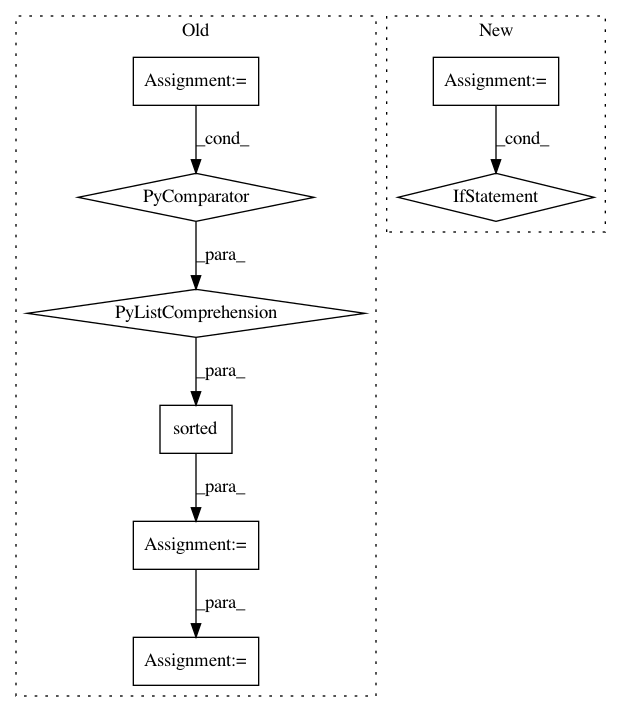

93f84bee4d0c9e082c5ef04fa5f4a0886cdad2db,openrec/recommenders/recommender.py,Recommender,_optimistic_restore,#Recommender#,460
Before Change
reader = tf.train.NewCheckpointReader(save_file)
saved_shapes = reader.get_variable_to_shape_map()
var_names = sorted([(var.name, var.name.split(":")[0]) for var in tf.global_variables()
if var.name.split(":")[0] in saved_shapes and len(var.shape) > 0])
restore_vars = []
with tf.variable_scope("", reuse=True):
for var_name, saved_var_name in var_names:
curr_var = tf.get_variable(saved_var_name)
var_shape = curr_var.get_shape().as_list()
if var_shape == saved_shapes[saved_var_name]:
restore_vars.append(curr_var)
// print("... restored variables:", ",".join([var.name for var in restore_vars]))
saver = tf.train.Saver(restore_vars)
saver.restore(session, save_file)
def build(self):
After Change
saved_shapes = reader.get_variable_to_shape_map()
restore_vars = []
for var in tf.global_variables():
var_name = var.name.split(":")[0]
if var_name in saved_shapes and len(var.shape) > 0:
if var.get_shape().as_list() == saved_shapes[var_name]:
restore_vars.append(var)
saver = tf.train.Saver(restore_vars)
saver.restore(session, save_file)
def build(self):
In pattern: SUPERPATTERN
Frequency: 3
Non-data size: 8
Instances
Project Name: ylongqi/openrec
Commit Name: 93f84bee4d0c9e082c5ef04fa5f4a0886cdad2db
Time: 2018-09-26
Author: ylongqi@gmail.com
File Name: openrec/recommenders/recommender.py
Class Name: Recommender
Method Name: _optimistic_restore
Project Name: pgmpy/pgmpy
Commit Name: 73dcacffa7dee910a9478cd7d783d91ef84dc987
Time: 2013-09-21
Author: snigam3112@gmail.com
File Name: BayesianModel.py
Class Name: BayesianModel
Method Name: add_nodes
Project Name: rasbt/mlxtend
Commit Name: c9e82bb1ab323d4a79793e47dbdd9204302e36af
Time: 2015-04-06
Author: se.raschka@me.com
File Name: mlxtend/file_io/find.py
Class Name:
Method Name: find_filegroups